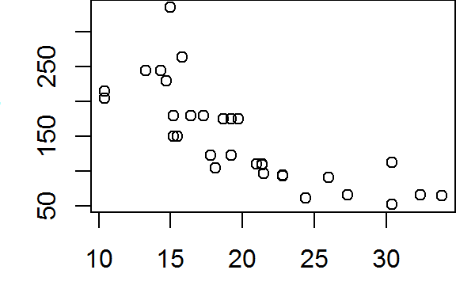

R markdown document
This tutorial makes use of the following R package(s): knitr and rmarkdown.
Introduction
An R markdown document is a text file usually ending with an .Rmd extension. It allows one to embed R code chunks and their output into a comprehensive report thus eliminating the possibility of loading the wrong figure into the document, or forgetting to update a statistical summary in the text when the original data file was revised.
Creating an R markdown output from an Rmd file requires knitting the file as opposed to running the code as you would an R script. The RStudio interface provides you with a knit button at the top of its interface. The knit button also allows you to choose the output format (HMTL, Word or PDF). You can also knit an Rmd file in R using the render function from the rmarkdown package. For example,
rmarkdown::render("HW16.Rmd")The YAML header
The YAML header controls the look and feel of your document. At the very least, your R markdown document should contain the following YAML header sandwiched between two sets of ---:
--- title: "Your document title" author: "ES 218" output: html_document: default ---
Make sure that the html_document: default line is indented at least two spaces. If you intend on creating a Word document, substitute html_document with word_document.
--- title: "Your document title" author: "ES 218" output: word_document: default ---
The YAML header can take on several parameters. For example, to add the current date, add:
date: '`r format(Sys.time(), "%d %B, %Y")`'
The above chunk makes use of an inline code chunk that will be discussed later in this tutorial. Note the mix of single quotes and back ticks that wrap the inline code. The %d, %B and %y parameters specify the date format. You can read more on date formats here.
To have the document automatically generate a table of contents add toc: true to the html_document or word_document header. Make sure that the toc parameter is indented at least two spaces from the xxx_document header:
...
output:
html_document: default
toc: true
The above generates a static TOC. If you want to generate a floating TOC, add toc_float: true.
...
output:
html_document: default
toc: true
toc_float: true
By default, all code chunks are shown along with their output. If you want to collapse all code chunks (yet make them available if the user chooses so), set code_folding: hide
...
output:
html_document: default
toc: true
toc_float: true
code_folding: hide
Section headers
You can add section headers to your document by preceding the header with one or more hashtags. Each hashtag represents one heading level. For example, the top heading level is # and the third heading level is ###.
The top header hashtag is usually avoided because its default font size tends to be too big. It’s not uncommon to see R markdown files assign the top level to ##.
## Use this as a top section level Some text ### Use this as the second section level Some text #### Use this as the third section level etc...
Use this as a top section level
Some text
Use this as the second section level
Some text
Use this as the third section level
etc…
Text formats
The markdown language has several built-in text formatting options. A brief summary of some their syntax follows:
- Italic: To italicize text, wrap it in asterisks as in
*this is italicized*. Note that you do not want spaces between the asterisks and the text. - Bold: To bold text, wrap it with a pair of asterisks
**this is bold**. - Web links: To create web links wrap the text with
[ ]followed by the web link wrapped with( )as in[ES 218 website](https://mgimond.github.io/ES218). Make sure that there are no spaces between[]and(). - Lists: To create lists in your document, precede each list item with an asterisk followed by a space. For example:
* First list element * Second list element * Third list element
- First list element
- Second list element
- Third list element
- Block equations: You can embed Latex block equations using double dollar signs,
$$
x = \frac{1 + x}{x}
$$
which generates,
\[ x = \frac{1 + x}{x} \]
- Inline equations: You can also add inline Latex equations using single dollar signs,
The equation $x(1 + x)$ can be re-written as $x + x^2$.
which generates,
The equation \(x(1 + x)\) can be re-written as \(x + x^2\).
Code chunks
To embed a code chunk, simply wrap the code between ```{r} and ```.
```{r}
plot(hp ~ mpg, mtcars)
```
Code chunks can take on many options. Examples of a few common options follow:
echo: If you don’t want the code chunks to appear in the ouput, setecho=FALSE.include: If you want neither the code chunk nor its ouput displayed in the output, setinclude=FALSE.fig.widthandfig.height: These parameters control a figure’s height and width (in inches).warningandmessage: Some functions will output warnings or messages, most of which you probably do not want in your output document. To hide these, setwarningandmessagetoFALSE.
An example of a code chunk with a few of the aformentioned parameter follows:
```{r message=FALSE, warning=FALSE, echo=TRUE, fig.width=3, fig.height=2}
plot(hp ~ mpg, mtcars)
```
Here’s the output (note that echo was set to TRUE in this example):
plot(hp ~ mpg, mtcars)
Document wide code chunk options
You can apply document wide code chunk options. For example, to avoid adding message=FALSE and warning=FALSE to each chunk of code, you can add this single chunk of code to the beginning of your Rmd file.
```{r include=FALSE}
knitr::opts_chunk$set(message=FALSE, warning=FALSE)
```
Inline code chunks
If statistical summaries or data derived vectors are to populate text in your document, it’s best to do so as inline code chunks. For example, you might want to embed the mean mpg value from the mtcars dataset in your text. The traditional approach is to compute the mean in an R console as follows,
mean(mtcars$mpg)[1] 20.09062then transcribe this value into your document as follows:
The mean miles per gallon is 20.1 mpg.
An automated way to do this is to embed the code chunk directly into your text by wrapping it between `r (backtic followed by the letter r) and another backtick.
The mean miles per gallon is `r mean(mtcars$mpg)` mpg.
which generates:
The mean miles per gallon is 20.090625 mpg.
To control the precision, you can wrap the output with round,
The mean miles per gallon is `r round(mean(mtcars$mpg), 1)` mpg.
The mean miles per gallon is 20.1 mpg.
If the code chunk becomes too long and unwieldy to embed in your text, you can create an object from that code in a separate chunk of code then reference that object inline. For example:
```{r include=FALSE}
M <- lm(mpg ~ hp, mtcars)
r.sq <- round(summary(M)$r.square, 3)
```
The modeled r-square between miles-per-gallon and engine horsepower is `r r.sq`.
The code chunk is hidden from the output, but the object r.sq is created nonetheless and converted to its value in the inline code chunk. The output thus looks like:
The modeled r-square between miles-per-gallon and engine horsepower is 0.602.
Tables
You can create two types of tables: static tables where you manually populate the cell values, and dynamic tables which are populated with R data tables.
Static tables
Here’s an example of a static table syntax:
column 1 Column 2 column3 ----------- ----------- ------------ val1 2.3 apple val2 5 orange val3 0.34 kiwi
| column 1 | Column 2 | column3 |
|---|---|---|
| val1 | 2.3 | apple |
| val2 | 5.0 | orange |
| val3 | 0.34 | kiwi |
Note how the left and right adjusted columns in the output reflect the left and right adjusted columns in the above syntax. It’s important that the column elements not extend beyond the dashed line extents.
Dynamic tables
There are many R packages that specialize in table output formats such as xtable and stargazer. However, decent tables can be created with knitr’s kable function. Here’s an example:
knitr::kable( head(mtcars), format="html" )
| mpg | cyl | disp | hp | drat | wt | qsec | vs | am | gear | carb | |
|---|---|---|---|---|---|---|---|---|---|---|---|
| Mazda RX4 | 21.0 | 6 | 160 | 110 | 3.90 | 2.620 | 16.46 | 0 | 1 | 4 | 4 |
| Mazda RX4 Wag | 21.0 | 6 | 160 | 110 | 3.90 | 2.875 | 17.02 | 0 | 1 | 4 | 4 |
| Datsun 710 | 22.8 | 4 | 108 | 93 | 3.85 | 2.320 | 18.61 | 1 | 1 | 4 | 1 |
| Hornet 4 Drive | 21.4 | 6 | 258 | 110 | 3.08 | 3.215 | 19.44 | 1 | 0 | 3 | 1 |
| Hornet Sportabout | 18.7 | 8 | 360 | 175 | 3.15 | 3.440 | 17.02 | 0 | 0 | 3 | 2 |
| Valiant | 18.1 | 6 | 225 | 105 | 2.76 | 3.460 | 20.22 | 1 | 0 | 3 | 1 |
If the output file format is a Word document, substitute format="html" with format="pandoc".
A complete example
Here’s what a complete Rmd file might look like:
---
title: "Your document title"
author: "ES 218"
output:
html_document: default
toc: true
---
```{r include=FALSE}
knitr::opts_chunk$set(message=FALSE, warning=FALSE, echo=TRUE)
```
## A basic plot
```{r fig.width=3, fig.height=2}
plot(hp ~ mpg, mtcars)
```
## Here's a glimpse at the data
knitr::kable(head((mtcars), format="html")
## A basic analysis
```{r include=FALSE}
M <- lm(mpg ~ hp, mtcars)
r.sq <- round(summary(M)$r.square, 2)
```
The modeled r-square between miles-per-gallon and engine horsepower is `r r.sq`.
Additional resources
- Here’s a sample Buoy data report Rmd file
- Rstudio’s website has additional R markdown configuration options.
 Manny Gimond (2018)
Manny Gimond (2018)